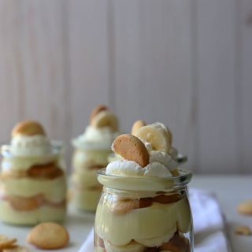

Budin de banana
Ingredientes
- 500 ml (17 fl-oz) milk
- 1/2 cup of granulated sugar
- 3 teaspoons of cornstarch
- 3 egg yolks/li>
- teaspoon of butter
- 1 tablespoon of vanilla extract
- Vanilla cookies
- 2 banana
- 1 cup of whipping cream
Preparacion
- Colocar en un pocillo la maicena, yemas de huevo y un poco de leche (1/4). Mezclar bien todo hasta que se disuelva la maicena. Luego en una olla colocar la leche y azúcar. Al primer hervor, bajar el fuego y agregar la mezcla de maicena pasada por colador a la leche.
- Revolver muy bien y evitar que se formen grumos. Añadir la esencia de vainilla y mantequilla. Revolver bien y luego de unos 3 a 4 minutos apagar. Traspasar el budín a un bowl, tapar con papel de plástico y dejar enfriar completamente.
- Luego batir la crema, puede agregarle 1 o 2 cucharadas de azúcar flor si quiere. Luego armar el postre. Coloca una porción de budín, luego unas rodajas de banana, luego unas galletas de vainilla. Repetir el proceso y finalmente cubrir con una porción de crema batida, una galleta y rodaja de banana.